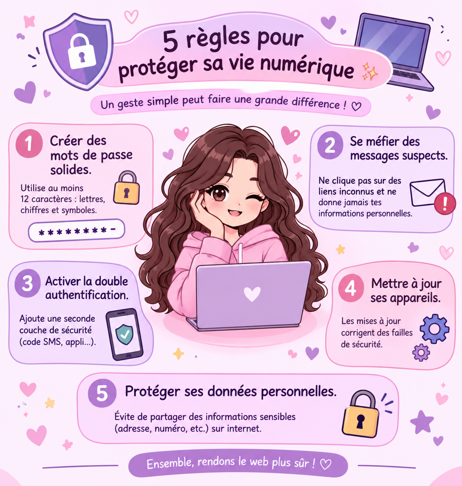

🔐 La cybersécurité
Protégeons notre monde numérique !
✨ Qu'est-ce que la cybersécurité ?
La cybersécurité regroupe les méthodes et les outils utilisés pour protéger les ordinateurs, les réseaux et les données contre les attaques informatiques.
🎀 Infographie : protéger sa vie numérique

⚠️ Les principales menaces
🦠 Les malwares
Des logiciels malveillants conçus pour perturber un appareil ou compromettre ses données.
🎣 Le phishing
Une technique de fraude qui consiste à se faire passer pour une personne ou une organisation de confiance afin de tromper la victime.
🔑 Les mots de passe faibles
Des mots de passe faciles à deviner qui peuvent rendre un compte plus vulnérable.
💡 Les bonnes pratiques
- Utiliser des mots de passe longs et uniques.
- Activer l'authentification à deux facteurs.
- Éviter les liens suspects.
- Mettre à jour régulièrement ses appareils.
- Ne jamais partager ses informations personnelles.
📚 Sources
Les informations de cette page doivent être vérifiées à partir de sources fiables comme Cybermalveillance.gouv.fr .
🧠 Teste tes connaissances !
Réponds aux 3 questions pour tester tes connaissances en cybersécurité.